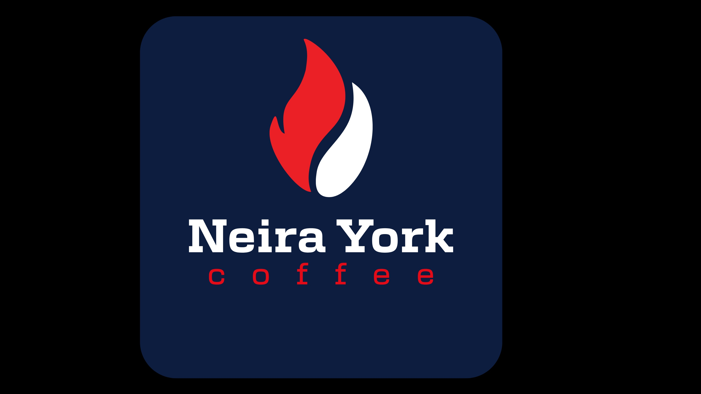

Del corazón del Eje Cafetero a tu mesa
Neira · Caldas · Colombia · Desde 2021
Más de 16 variedades de café especial seleccionadas del Eje Cafetero. Geisha, Bourbon, Exótico NYC y más — con despachos a todo Colombia.
Laboratorio, maquila, consultoría, cursos y exportación. 20 años de experiencia al servicio de tu café y tu negocio.